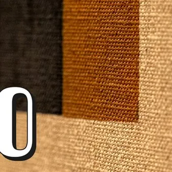

da gio 23 lug a dom 29 nov
Mostra "FVG70.02. Nuovi modelli di ricerca"
“FVG70.02. Nuovi modelli di ricerca” è il secondo capitolo del progetto espositivo dedicato alla ricostruzione del panorama delle arti visive regionali negli anni Settanta, allestito presso la Galleria Spazzapan dal 23 luglio al 29 novembre 2026. Sede: Galleria Regionale di Arte…
 Indicazioni
Indicazioni
- Costi e prenotazioni
- Costo non indicato · Prenotazione non indicata
- Programma
- Programma da verificare. Apri la fonte ufficiale per orari e possibili aggiornamenti.
- In caso di maltempo
- Nessuna indicazione specifica pubblicata.
- Note
- Acquisito automaticamente dalla fonte.
L’EVENTO
Descrizione completa
La mostra “FVG70.02. Nuovi modelli di ricerca”, secondo capitolo di “ FVG Settanta. Arti visive in Friuli Venezia Giulia negli anni ’70” , è ospitata dal 23 luglio al 29 novembre 2026 alla Galleria Regionale d’Arte contemporanea Luigi Spazzapan . Nel sistema dell’arte italiana tra gli anni Sessanta e Settanta, il Friuli Venezia Giulia rappresenta un territorio ricco di esperienze, linguaggi e sperimentazioni che, nonostante la loro rilevanza, hanno trovato solo parziale riconoscimento nella storiografia nazionale. Da questa consapevolezza nasce “FVG70.02. Nuovi modelli di ricerca” , una mostra che propone una rilettura di quella stagione attraverso il concetto di muro invisibile : una barriera simbolica che ha separato la vitalità della ricerca artistica regionale dalla sua piena ricezione critica. Il progetto, curato dal Curatore e Conservatore della Galleria, Lorenzo Michelli, invita a riflettere sul sistema dell’arte del decennio, mettendo in relazione artisti, istituzioni, gallerie, associazioni culturali e spazi di sperimentazione che hanno contribuito alla definizione dell’identità contemporanea del territorio . Più che offrire una narrazione conclusa, la mostra restituisce la complessità di un contesto aperto al confronto con le principali ricerche artistiche italiane e internazionali. Il percorso espositivo si sviluppa sui tre livelli della Galleria. Il piano terra ricostruisce la geografia della ricerca nei poli di Udine e Pordenone, mentre il primo piano quella nel polo di Trieste e nel goriziano con Gradisca d’Isonzo – che ha avuto un ruolo centrale nella promozione dell’arte contemporanea regionale. Il secondo si articola in nuclei tematici: Arte e femminismo; La cultura del progetto; Pura pittura, pura scultura; Continuità e Trasformazione; Strutture primarie . La mostra si propone così come un’occasione di studio e di rilettura critica, offrendo nuovi strumenti per comprendere una stagione di particolare intensità culturale e restituendo al Friuli Venezia Giulia il ruolo che gli spetta nel panorama dell’arte contemporanea italiana . Il progetto espositivo Nell’ambito di “Italia Settanta. La creatività come antidoto. Arte Moda Design”, “ FVG Settanta. Arti visive in Friuli Venezia Giulia negli anni ‘70” si configura come un percorso articolato di ricerca, valorizzazione e divulgazione dedicato alla ricostruzione del panorama artistico regionale nel corso di uno dei decenni più significativi per l’evoluzione delle arti visive contemporanee. L’obiettivo è riportare alla luce protagonisti, artisti, mostre, eventi, reti/relazioni e progettualità culturali che hanno contribuito a definire l’identità artistica del Friuli Venezia Giulia negli anni Settanta, evidenziando il ruolo svolto dalla regione all’interno dei più ampi processi di rinnovamento artistico e culturale del periodo. *** Informazioni utili: Mostra: FVG 70.02 Sede: Galleria Regionale di Arte contemporanea Luigi Spazzapan, Via Marziano Ciotti, 51 – Gradisca d’Isonzo (GO) Periodo: Dal 27 giugno al 29 novembre Catalogo: Antiga Edizioni Grafica: Studio Polo 1116 – Sergio Brugiolo e Chiara Romanelli Orari: da mercoledì a domenica, dalle 10 - 13 e 15 - 19 Contatti: galleriaspazzapan@regione.fvg.it / 0481 960816
Biglietto : intero 3€, ridotto 2€
IL PROGRAMMA
Programma e orari
Appuntamenti raccolti dalle fonti elencate. Dove manca un orario, non è ancora disponibile in questa scheda.
Programma pubblicato
- Dal 2026-07-23 al 2026-11-29
INFORMAZIONI UTILI
Prima di partire
- Controllare la fonte prima di partire.
ORGANIZZAZIONE